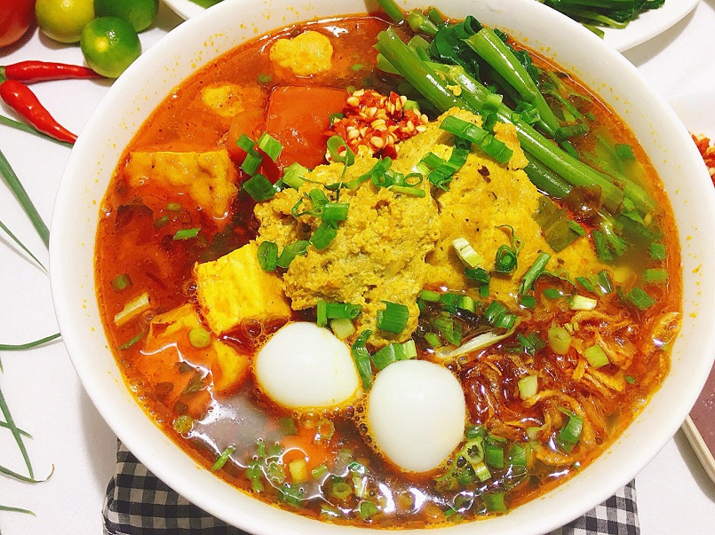
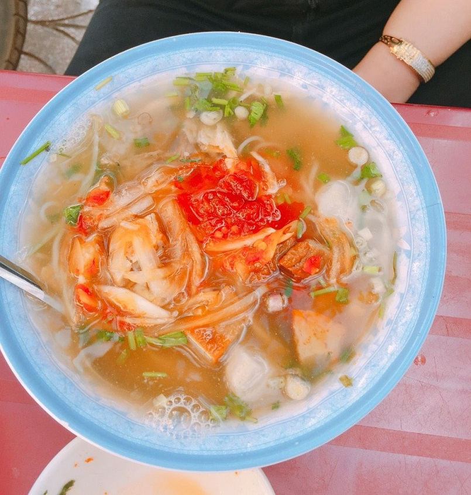
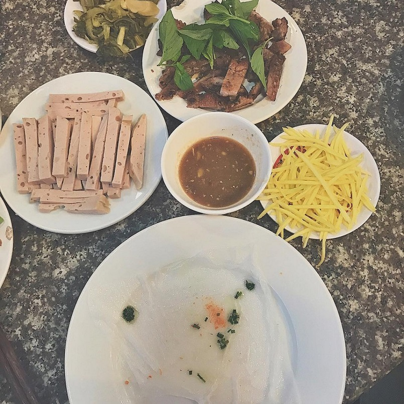
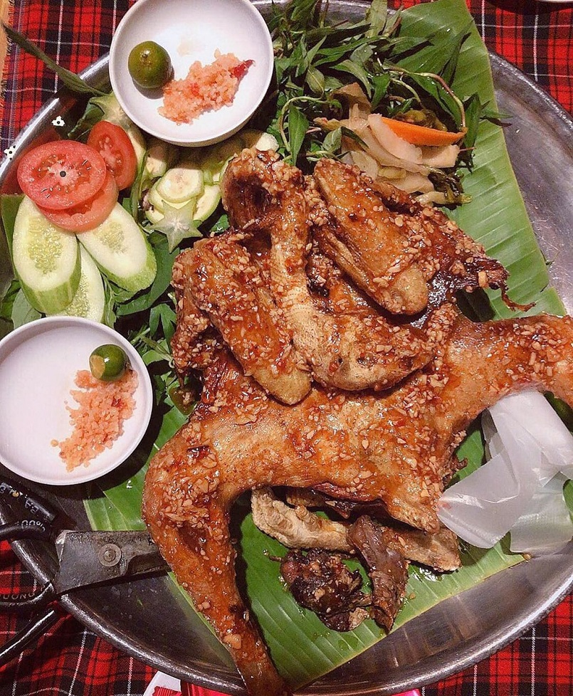
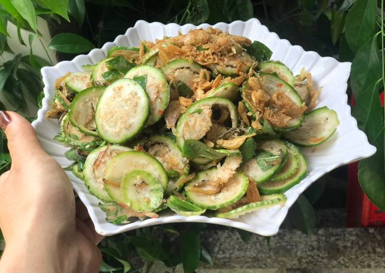
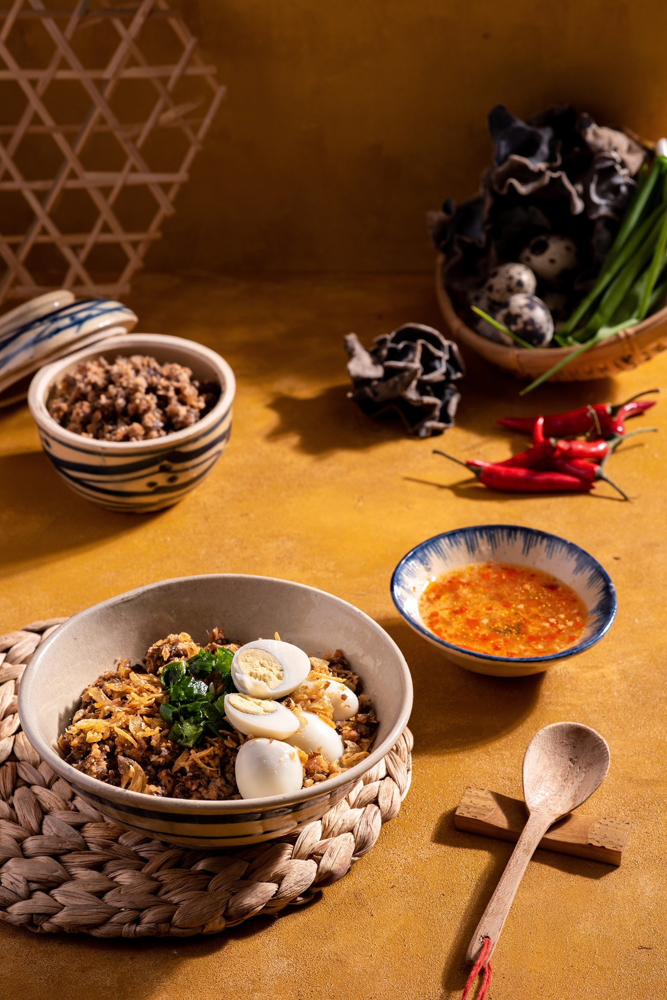

Khi đến Đắk Lắk du lịch, ngoài việc trải nghiệm những địa điểm nổi tiếng thì các món ăn cũng là một trong những điểm được quan tâm tiếp theo. Có những món ăn có hương vị na ná giống các món ăn ở Sài Gòn hay Hà Nội. Do đó, mọi người nên bắt đầu từ những món đặc trưng và nổi tiếng của đồng bào Tây Nguyên ở thành phố này nhé.
Đến với Buôn Ma Thuột, bạn sẽ khá phải đau đầu để lựa chọn nên ăn món gì, bởi có quá nhiều món ăn để chọn. Đa phần những người dân sinh sống tại Buôn Ma Thuột thường là dân tứ xứ nên nơi đây có nền ẩm thực vô cùng phong phú và đa dạng.
Món bún đỏ với màu đỏ của nước dùng, sợi bún to như cây đũa, khi ăn sẽ có vị thanh thanh, ngọt ngọt. Đặc biệt món bún đỏ ở đây sẽ có thêm vị ngọt của rau cần. Quán sẽ được mở từ lúc khoảng 4h chiều đến tối muộn, còn chần chừ gì mà chưa nếm thử một món ăn ngon, bổ, rẻ mà lại vừa ấm bụng phải không nào.
Món ăn này được chế biến rất nhanh chóng, chỉ cần bạn ngồi xuống ghế là có ngay một tô bún nóng hổi trước mặt. Tô bún có kèm vài miếng cá dầm và một chén chả cá nhỏ ăn kèm được trộn với ớt và hành tây. Món này sử dụng thìa để ăn, thích hợp ăn vào những buổi chiều mưa rơi nhẹ nhẹ.
Bánh ướt ở đây rất đặc biệt sẽ được ăn kèm với thịt nướng, dưa chuột, xoài xanh, dưa chua và các loại rau thơm. Khi ăn chúng ta sẽ cuộn tất cả những gia vị vào trong bánh cuốn và chấm cùng với nước mắm ớt. Món ăn lạ miệng nhưng vô cùng thơm ngon và hấp dẫn.
Gà nướng ở Buôn Ma Thuột siêu ngon, bởi được chế biến từ thịt gà thả dẫy, nên thịt chắc, ngọt. Gà sau khi sơ chế được ướp với gia vị đặc biệt mà chỉ có người đồng bào mới có.
Muốn đồ ăn thêm ngon thì phải để trần nướng trên bếp than hoa, lửa đều tay không quá lớn để thịt chín kỹ và da vàng giòn. Đặc biệt sẽ không quết mật ong tựa như các nơi khác, khi ăn chấm với muối ớt tiêu xanh.
Người Tây Nguyên có không ít món phơi khô lạ lạ mà hương vị rất ngon, điển có vẻ như món cà đắng này. Được phơi khô rất đơn giản để khách đóng hộp mang đi, làm quà biếu vừa tình cảm, vừa lịch sự
Thịt nai khô cũng chính là loại thịt nổi tiếng nhất, món thịt đắt tiền nhưng ai cũng muốn mang về làm quà. Thịt nai sấy khô có thể ăn luôn, hoặc chế biến thành món gỏi, món xào, nướng… Loại thịt chắc, ngọt được ướp với công thức riêng rồi đem gác bếp.
Thêm một món ăn ngon, cứ liền tù tì mà không biết ngát chính là bánh bột lọc, bánh bèo khay. Bột bánh khuấy đều tay cho mịn, rồi đổ vào chén thường thấy ở miền Trung. Bánh bèo có nhân tôm thịt, hành phi nhìn thôi đã thấy thu hút rồi.
Bánh đúc nóng cho những hôm trở gió quả thật rất hấp dẫn, một món ăn đặc sản Buôn Ma Thuột không thể bỏ lỡ. Tô bánh đúc nóng, có thịt bằm, mọc nhĩ và nước sốt đậm đà thịt, tôm, dầu điều kết hợp cho hương vị điểm 10 khó cưỡng.
Vừa rồi là những thông tin được chia sẻ về các món ăn ngon tại Buôn Ma Thuột. Với các nội dung hữu ích này chắc hẳn bạn sẽ có những trải nghiệm trọn vẹn khi đến BMT đấy. Đừng bỏ lỡ bất cứ 1 món nào trong danh sách các món ăn ngon này nhé! Bởi vì, mỗi món ăn sẽ có một hương vị đặc trưng mang lại trải nghiệm mới lạ riêng đấy!
Và hãy cùng khám phá thêm thật nhiều món ngon khi đến BMT bạn nhé.